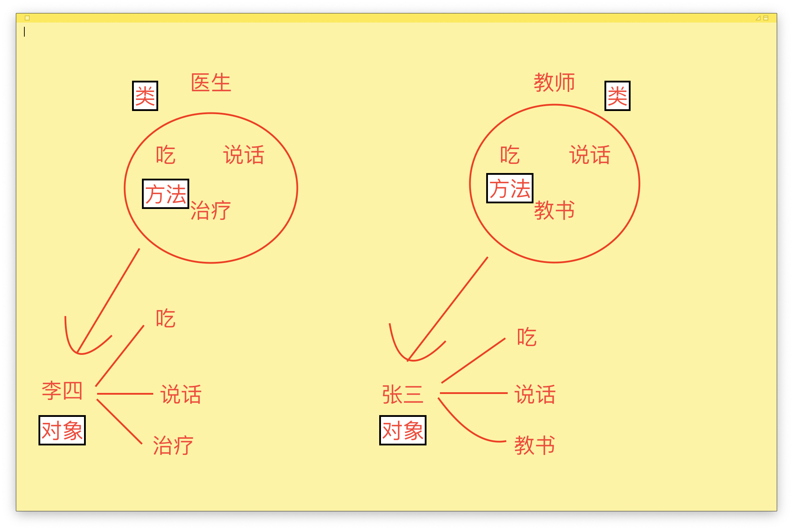

#2 Python面向对象（一）
对于萌新来说，面向对象，这是一个很陌生的词语。如果你接触过Linux，你一定知道“一切皆文件”，也就是说，在Linux中所有都是文件，鼠标是文件、键盘是文件、目录是文件等等一切都是文件；Python设计时就是一门面向对象的语言，在Python中，秉承“一切皆对象”，也就是说，在Python中见到的一切都是对象。面向对象是一个很抽象的概念，来一点一点剖析它！
一、程序编程典范
在编程中，想要实现同样的功能，可能会有好多种编写方法，毕竟条条大路通罗马，随着编写方法的不断聚类，出现了三种主要的程序编程典范，分别是：面向过程编程、函数式编程、面向对象编程。这三种编程典范各有千秋，比较一下便知。
面向过程编程
面向过程编程的思想是让程序从头到尾一步步执行，环环相扣。对于小程序和小脚本来说，面向过程是最方便的。但是面向过程也有这致命的缺点，代码的重复利用率极低，假如程序中有十次需要拿到列表里数字元素的最小值，那就要重复编写十次这个代码，很烦对不对，突然需求变了，不要最小值了，要最大值，那就要更改程序十次，更烦😡
1 | list1 = [1, 2, 3, 4, 5, 6, 7] |
函数式编程
于是函数便应运而生了，函数的出现大大增加了代码的重复利用率，并且修改起来也特别方便，程序也容易扩展。将上面的需求编写为一个函数即可，每次使用时调用函数即可，当需求变了以后，直接修改函数的代码块就可以解决。这就是函数式编程，听起来超级方便是不是，以上就是函数式编程的优点。
1 | def maxNum(nums): |
面向对象编程
但但但但但是，函数式编程就没有缺点了吗？当然有，要不然就不会出现面向对象编程了。
假如现在有三个角色，分别是张三、李四、王二麻子，他们的职业分别是老师、医生、建造师，需要实现的功能是吃饭、说话、教书、治疗、建造。按照函数式编程的思想，这些功能就是函数嘛，搞起：
1 | def eat(name): |
上面的代码看起来实现了要有的功能，但是有一个致命的问题，那就是张三好像也可以治疗和建造、李四也可以教书和建造、王二麻子也可以教书和治疗，无非不过传递参数的时候换一个人名，这明显是不允许的！要是可以做出限制就好了，教师只能去教书，不能去治疗和建造，这就是面向对象编程的思想。

二、面向对象简介
从上图可以看出，对象来自于类，对象能干的事只有类里的方法，现在又稀里糊涂多了一个更加陌生的新名词：类
面向对象核心
类（class）：用来描述属性和方法的集合。
方法：类中定义的函数
对象：类的实例化
「解释」面向对象编程就是物以类聚，人以群分。有一个职业叫做医生（类），这是一个抽象的存在；李四（对象）是一个医生，这是一个具体而真实的存在；因为医生（类）可以吃饭、说话、治疗，不可以教书，那么张三（对象）就可以吃饭、说话、治疗，不可以教书。
这就是面向对象编程，尤其对于游戏开发及其重要，比如英雄联盟，所有英雄都可以使用召唤师技能（点燃、闪现等），不同英雄又有着各自不同的技能
一切皆对象
Python在设计之初就是一门面向对象编程语言，特点就是：一切皆对象。字符串、列表、字典等这些都是类，每当你创建一个具体的字符串，就相当于类的实例化对象，这个具体的对象就可以使用字符串类里的方法，这也就是为什么不同数据类型拥有不同的方法
1 | In [2]: print(type('')) |
三、类的创建和实例化
基本语法
「创建」说了这么多，相信你已经明白了面向对象编程的思想。那么接下来就要开始创建类了。基本语法如下：
1 | class 类名: |
可以看到类的定义和函数的定义差不多，举几个例子吧：
1 | class Doctor: |
「实例化」类的实例化其实很简单，只需要 对象 = 类() 即可，举例子： 1
2
3zhangsan = Teacher() # 将Teacher类实例化为对象张三
lisi = Doctor() # 将Doctor类实例化为对象李四
「属性访问」使用 实例化对象.方法() 即可，例如： 1
2
3
4zhangsan.eat()
zhangsan.teach()
lisi.talk()
lisi.treat()
1 | # 运行结果 |
self参数
细心的小伙伴已经发现类里的每一个函数都有一个默认参数self，这个self是什么呢？我们先来打印一下看看：
1 | class Teacher: |
可以看到self是Teacher object，object的中文意思为对象，也就是说，self是类的实例化对象，也就是lisi。
类中函数的第一个参数是固定表示对象的，与叫什么无关，self是大家约定俗成的叫法而已，换成其他名称也是可以的，比如换成sb
1 | class Teacher: |
不是特殊需要尽量不要改变self的名称啦🐷
小结
关于面向对象第一小节就记录这么多，主要是理解面向对象的思想以及简单类的创建。之后会讲解类的各种变量、类的传参、类的性质、类的各种方法。今天就肝到这里